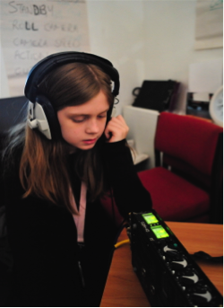
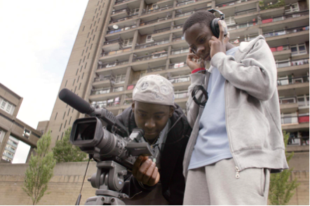

After School and Holiday Projects
Regular sessions with experienced youth tutors were held after-school, at weekends, half-term and in holidays at our dedicated youth space in Telford Road, close to the Wornington Green Estate at the northern end of Portobello Road.

Productions by young people included films about the new talent of young musicians from West London’s diverse communities, the risk and dangers of carrying knives and getting involved in drugs, healthy eating and body image, dance, skateboarding, arts programmes in London, bullying at school and feeling left out, being a stand-up comedian, researching the history of the Anti-Slavery movement.

On newly arriving at The Video College, young people made short auto-biographical films: WHO AM I?
After school and holiday projects
Out of school learning
Incredible Films